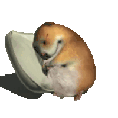
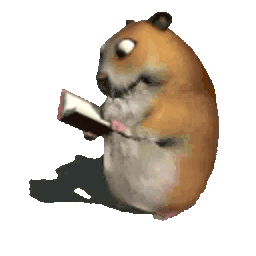

Cześć!

Nazywam się Janusz Będkowski z Turku z wykształcenia technik informatyk pracuję jako operator maszyn CNC moje zainteresowania to kino, podróże i żona kolegi Darka - MonikaArtykuły
Umiejętności
W tej kategorii nie stwierdzono nic co wyróżnia się ponad normęSzkoła
Jeszcze jak chodziłem do podstawówki to był tam taki paweł i ja jechałem do biedronki po lody i go spotkałem a potem do domu pojechałem

Dobrze
Moim zdaniem to nie ma tak, że dobrze albo że nie dobrze. Gdybym miał powiedzieć, co cenię w życiu najbardziej, powiedziałbym, że ludzi. Ekhm... Ludzi, którzy podali mi pomocną dłoń, kiedy sobie nie radziłem, kiedy byłem sam. I co ciekawe, to właśnie przypadkowe spotkania wpływają na nasze życie. Chodzi o to, że kiedy wyznaje się pewne wartości, nawet pozornie uniwersalne, bywa, że nie znajduje się zrozumienia, które by tak rzec, które pomaga się nam rozwijać. Ja miałem szczęście, by tak rzec, ponieważ je znalazłem. I dziękuję życiu. Dziękuję mu, życie to śpiew, życie to taniec, życie to miłość. Wielu ludzi pyta mnie o to samo, ale jak ty to robisz?, skąd czerpiesz tę radość? A ja odpowiadam, że to proste, to umiłowanie życia, to właśnie ono sprawia, że dzisiaj na przykład buduję maszyny, a jutro... kto wie, dlaczego by nie, oddam się pracy społecznej i będę ot, choćby sadzić... znaczy... marchew.
Czy
Moim zdaniem to nie ma tak, że dobrze albo że nie dobrze. Gdybym miał powiedzieć, co cenię w życiu najbardziej, powiedziałbym, że ludzi. Ekhm... Ludzi, którzy podali mi pomocną dłoń, kiedy sobie nie radziłem, kiedy byłem sam. I co ciekawe, to właśnie przypadkowe spotkania wpływają na nasze życie. Chodzi o to, że kiedy wyznaje się pewne wartości, nawet pozornie uniwersalne, bywa, że nie znajduje się zrozumienia, które by tak rzec, które pomaga się nam rozwijać. Ja miałem szczęście, by tak rzec, ponieważ je znalazłem. I dziękuję życiu. Dziękuję mu, życie to śpiew, życie to taniec, życie to miłość. Wielu ludzi pyta mnie o to samo, ale jak ty to robisz?, skąd czerpiesz tę radość? A ja odpowiadam, że to proste, to umiłowanie życia, to właśnie ono sprawia, że dzisiaj na przykład buduję maszyny, a jutro... kto wie, dlaczego by nie, oddam się pracy społecznej i będę ot, choćby sadzić... znaczy... marchew.
Niedobrze
Moim zdaniem to nie ma tak, że dobrze albo że nie dobrze. Gdybym miał powiedzieć, co cenię w życiu najbardziej, powiedziałbym, że ludzi. Ekhm... Ludzi, którzy podali mi pomocną dłoń, kiedy sobie nie radziłem, kiedy byłem sam. I co ciekawe, to właśnie przypadkowe spotkania wpływają na nasze życie. Chodzi o to, że kiedy wyznaje się pewne wartości, nawet pozornie uniwersalne, bywa, że nie znajduje się zrozumienia, które by tak rzec, które pomaga się nam rozwijać. Ja miałem szczęście, by tak rzec, ponieważ je znalazłem. I dziękuję życiu. Dziękuję mu, życie to śpiew, życie to taniec, życie to miłość. Wielu ludzi pyta mnie o to samo, ale jak ty to robisz?, skąd czerpiesz tę radość? A ja odpowiadam, że to proste, to umiłowanie życia, to właśnie ono sprawia, że dzisiaj na przykład buduję maszyny, a jutro... kto wie, dlaczego by nie, oddam się pracy społecznej i będę ot, choćby sadzić... znaczy... marchew.

Programy
Języki